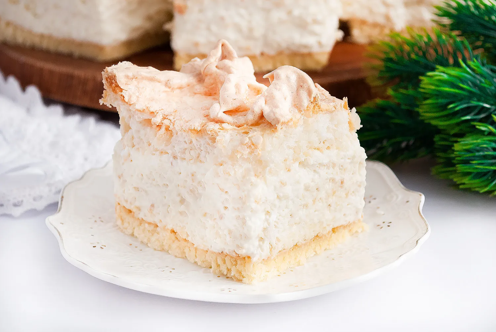
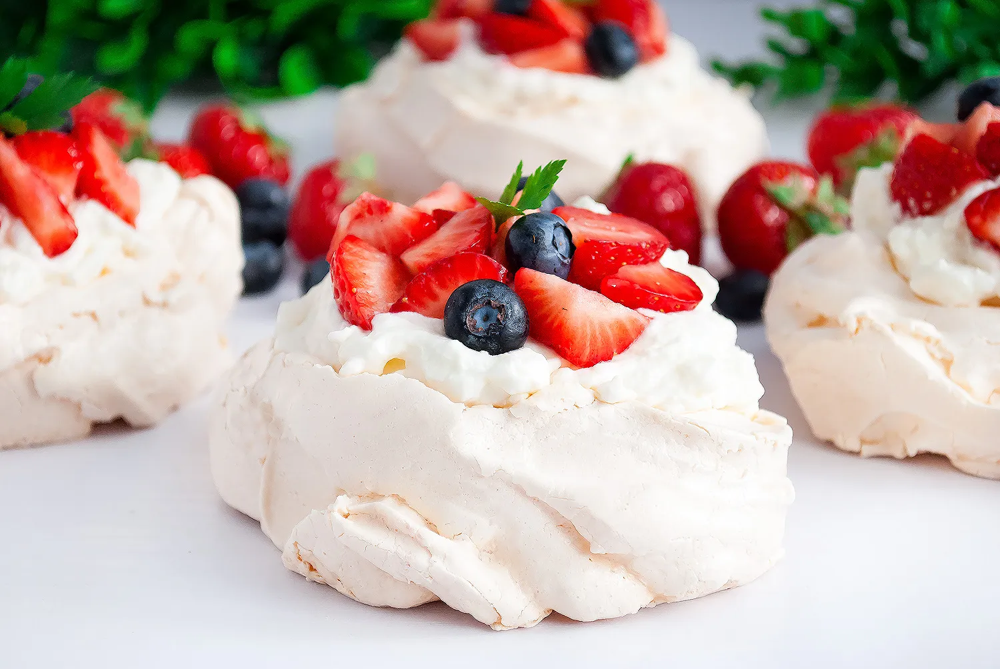
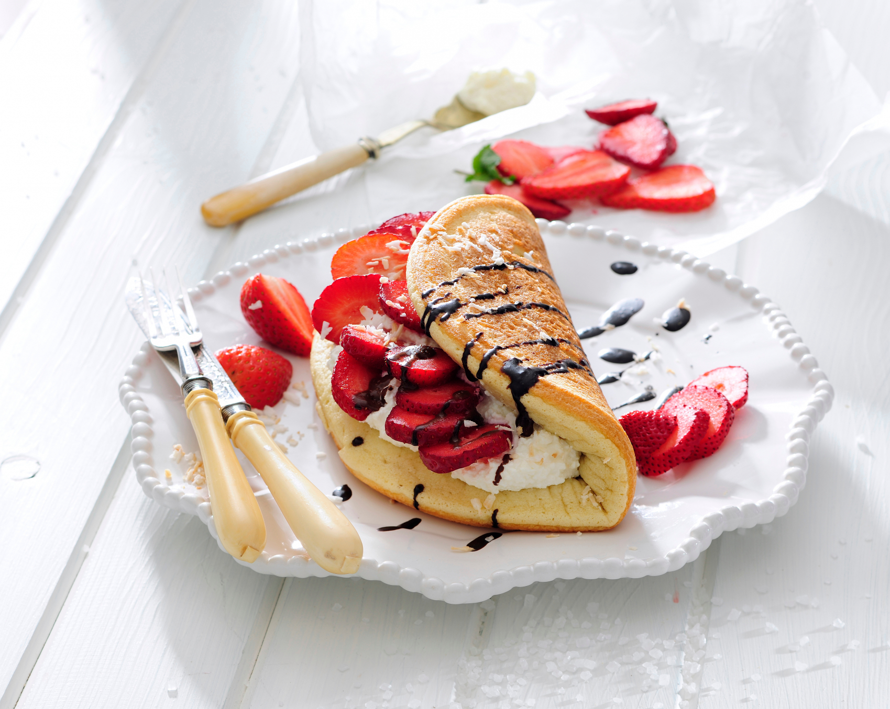

Kulinarny SkarbiecNajpopularniejsze słodkościPuszyste pankejki(321)

Biały michałek(306)

Beza Pavlova(289)Racuchy z jabłkiem(293)Przekąski na imprezęTortilla z papryką(452)Parówki w cieście(412)Burrito z mięsem(395)Pizza sticks(401)Przepisy na śniadanieGofry(624)

Omlet na słodko(610)Paluszki bananowe(591)Domowe musli(585)OpinieAdam MickiewiczTu smaki piękne jak Litwa się snują. Przepisy te jak poezja czarują. W kuchni tej serce i dusza królują.Giga ChadStrona mega konkretna, to jest gigachad sigma rizz w kuchni! Jak coś robić, to z klasą. Szanuję i polecam!Cristiano RonaldoStrona pełna mistrzowskich przepisów! Jakby Messi tutaj jadł, to by urósł. Siuuuu!BaxtonPolecam.